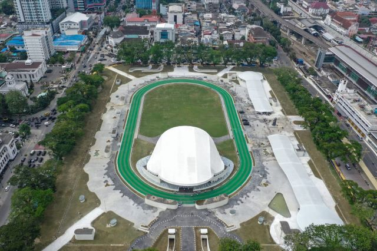
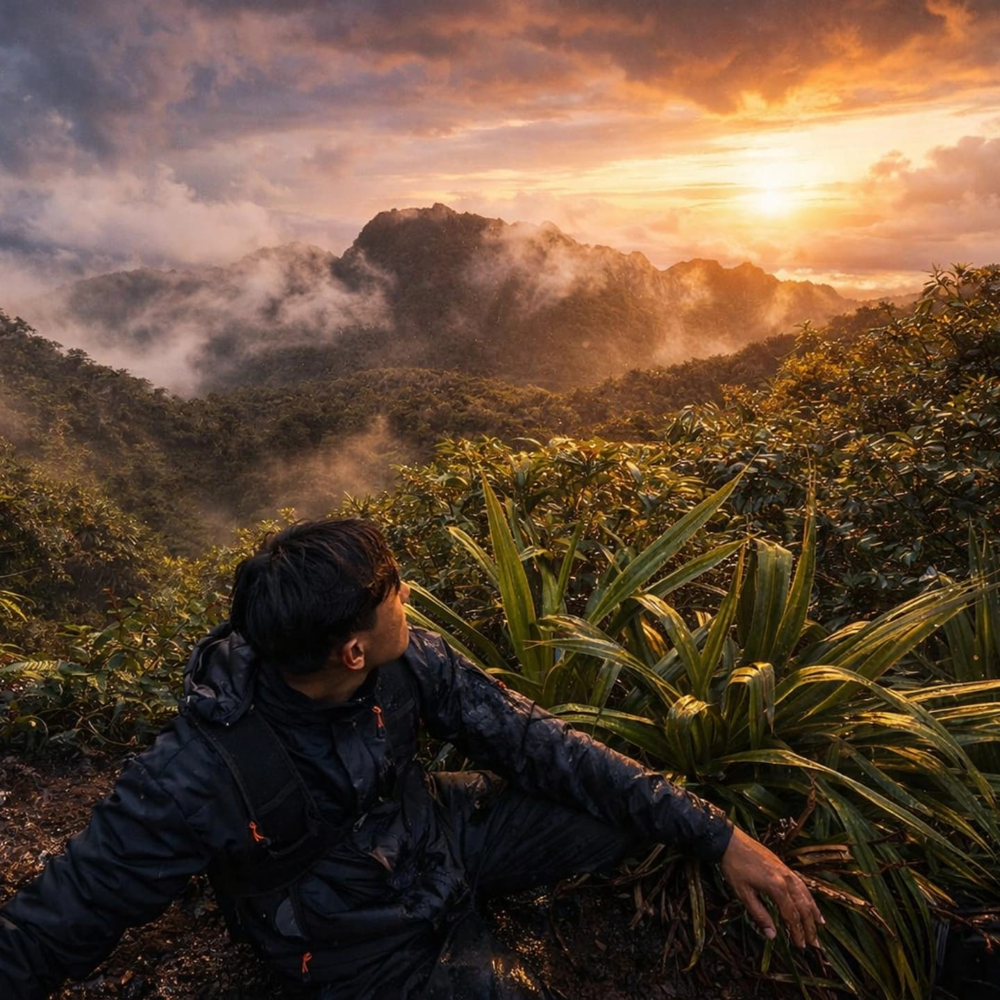
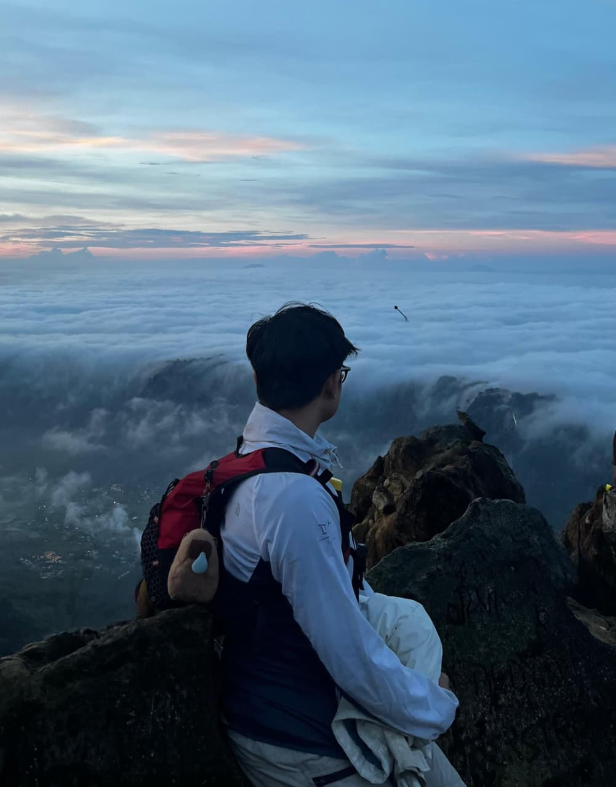
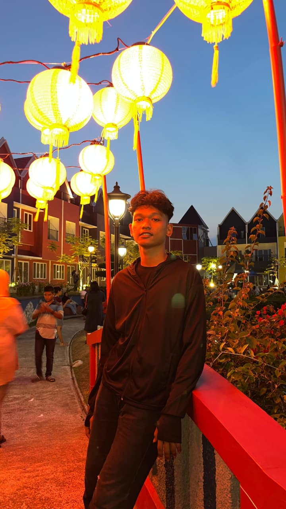
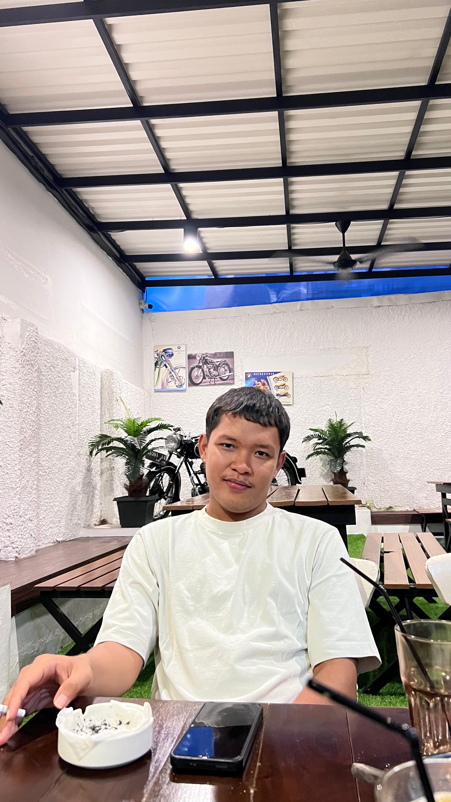

Platform Medan Sports Area
Temukan Tempat
Olahraga Terdekat
di Kota Medan
Medan Sports Area membantu kamu menemukan fasilitas olahraga seperti GYM, Badminton, Futsal dan lainnya dengan peta interaktif.

Platform
Apa itu Medan Sport Area?
Platform GIS yang membantu menemukan fasilitas olahraga terdekat di Medan.
Masalah
Tidak ada di Google Maps
Sulit mencari tempat olahraga karena tidak terdaftar di Google Maps
Solusi
Peta khusus olahraga
Filter jarak, harga, kecamatan, dan fasilitas.
Tentang Platform
Medan Sports Area
Platform terbuka untuk menemukan, menilai, dan berkontribusi pada data akurat.
0
Sport Center
0
Jenis Olahraga
100%
Gratis Akses
4.9★
Rating
Fitur Unggulan
Semua yang Kamu Butuhkan
Sistem Autentikasi
Login cepat dengan google
Manajemen Fasilitas
Peta interaktif & detail olahraga.
Kontribusi Pengguna
Tambahkan tempat & foto.
Ulasan & Rating
Sistem bintang & komentar.
Pencarian & Filter
Filter olahraga, harga, jarak.
Optimasi Mobile
GPS deteksi otomatis.
Cara Kerja
Mudah dalam 5 Langkah
1
Buka Aplikasi
Browser
2
Izinkan Lokasi
GPS deteksi posisi
3
Temukan Tempat
Lihat Medan Sports Area
4
Detail & Navigasi
Info lengkap + navigasi
5
Tambah Baru
Kontribusi komunitas
Keunggulan
Mengapa Memilih Kami?
Gratis & Open Source
Berbasis Lokasi Real-time
Fokus Olahraga
Cepat & Ringan
Tim Pengembang
Orang di Balik Medan Sports Area

Muhammad Ariza Risky (2305181056)
Team Leader & Web Developer
Sultan Rafi Djafar (2305181092)
Mobile Developer

Habib a'la al maududi (2305181032)
Web Developer

Ronatal Christian Dame (2305181004)
Surveyor & Data Researcher

Nathanaiel Sihombing (2305181040)
Surveyor & Data Researcher
Salman Fatihah (2305181104)
Surveyor & Data Researcher
Mulai Sekarang
Temukan Tempat Favoritmu
Akses peta digital gratis.